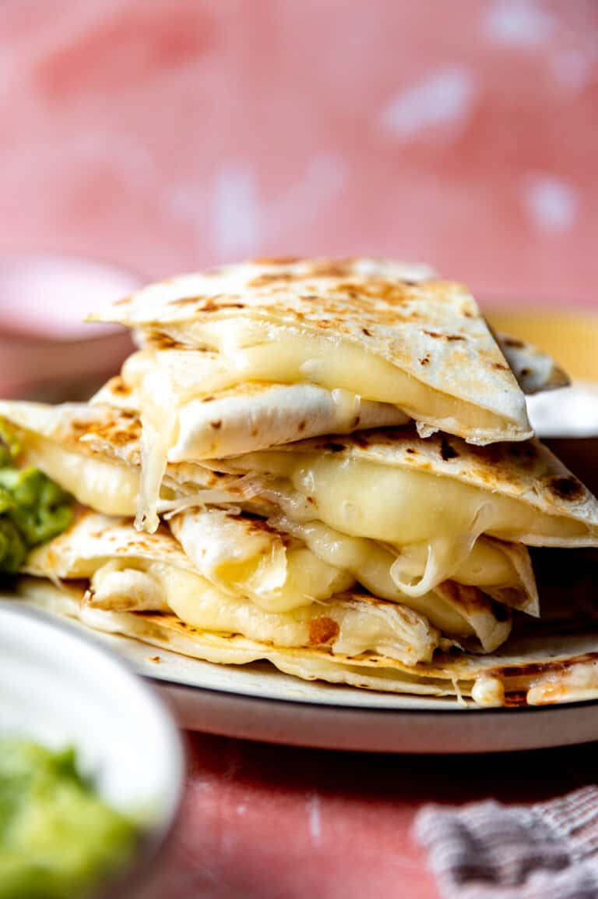

Cheese Quesadilla

Description
Simple cheese quesadilla recipe with a basic crema.
Ingredients
- Tortilla
- Mexican Cheese Blend
- Vegetable Oil
- Sour Cream
- Lime
- Coriander
Steps
- Heat up skillet on medium heat with a tsp of oil.
- Meanwhile, lay out one tortilla and put a handful of cheese on half of the tortilla.
- Fold tortilla in half creating a half moon and place onto hot skillet. Cook on each side until slightly browned, taking care not to burn the tortilla.
- While the quesadilla is cooking prepare the creme. Mix 2tbls of sour cream with half of a lime. Mix together with a fork and place in a small bowl to serve with the quesadilla.
- When the cheese in the quesadilla is melted, take off the skillet and cut into four pieces.
- Serve with coriander and crema.